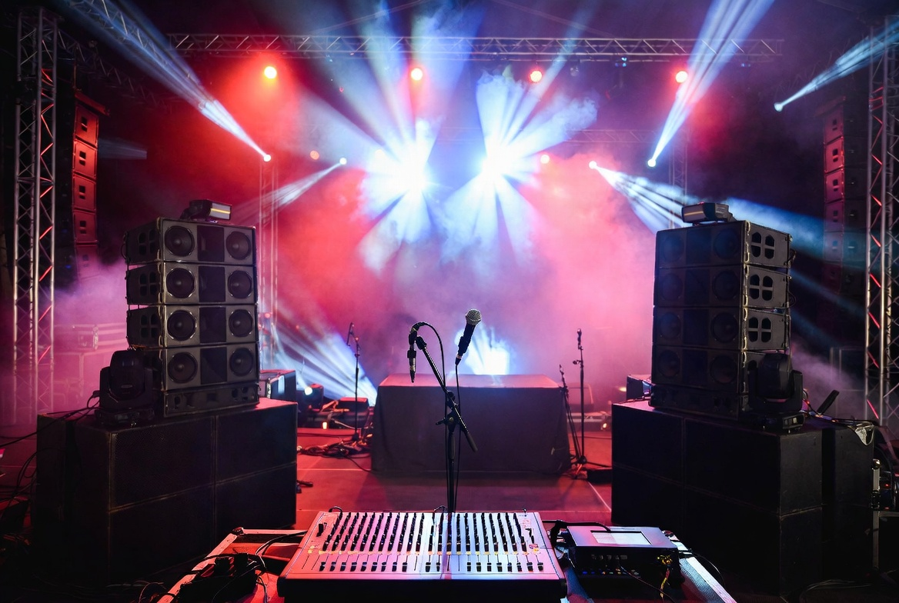
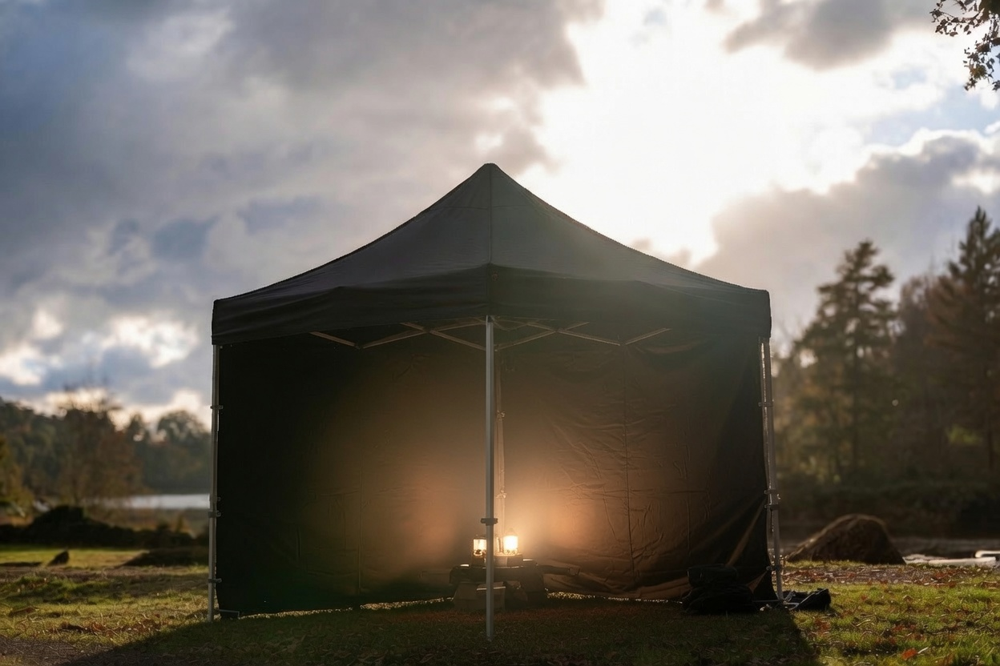

Op zoek naar een uitstekende geluidsinstallatie
voor al uw evenementen?
Met onze professionele apparatuur bent u verzekerd van een glashelder en mooi geluid
voor sprekers, live muziek, DJ's of gewoon achtergrondmuziek voor de iets kleinere evenementen tot ongeveer 250 personen.
Speakers/mengtafels
Onze Mackie apparatuur staat garant voor betrouwbaarheid en een zeer goed geluid.
Microfoons/licht
Wij hebben diverse microfoons/standaards en lichtoplossingen.
Tenten/heaters
Wij hebben diverse professionele evenementententen met heaters en verlichting.
Vervoer/techniek
Wij kunnen het vervoer, de opbouw en afbraak voor u verzorgen. Tevens kunnen wij u met geluidstechnici van dienst zijn.

Verhuur van geluid en licht
Zoek je professioneel geluid voor jouw feest, evenement, bedrijfspresentatie of feesttent? Wij verhuren complete geluidsinstallaties die perfect zijn afgestemd op evenementen tot circa 250 personen. Wat wij bieden: Krachtige en heldere geluidsets voor spraak, muziek en live-optredens Volledig draadloos microfoons (handmicrofoons + headset) Mengpanelen, speakers en subwoofers voor een strakke bas en goede spreiding Inclusief bekabeling en statieven – eenvoudig op te bouwen,ook hebben we mengtafels/muicrofoons en licht in ons assortiment. Of het nu gaat om een bruiloft, bedrijfsfeest, straatfeest of live band in de tent: ons geluid klinkt kristalhelder, is storingsvrij en wordt altijd goed afgesteld op de ruimte. ✅ Betrouwbare apparatuur ✅ Eenvoudig in gebruik (of met onze hulp) ✅ Scherpe prijzen ✅ Ophalen of bezorgen mogelijk in Assen en omgeving Laat je evenement écht goed klinken! Reserveer nu je geluidsinstallatie. Neem contact op

Verhuur van tenten/heaters/tafels en verlichting
Partytenten, Tafels & Heaters huren De complete oplossing voor een geslaagd buitenfeest! Bij ons huur je alles wat je nodig hebt voor een droge, gezellige en warme gelegenheid. Ons aanbod: Easy-Up Partytenten (3x3m, 3x4,5m en 3x6m) — inclusief zijwanden en verzwaringszakken. Snel opgezet en stevig. Biertafels & Statafels — complete biertafelsets (tafel + 2 banken) en stijlvolle statafels met barkrukken. Perfect voor borrels, BBQ’s en feesten. Terrasheaters — krachtige patioheaters voor directe warmte in de tent of tuin. Ideaal voor frisse avonden. Of je nu een buurtfeest, tuinborrel, bruiloft of bedrijfsfeest organiseert: met deze combinatie creëer je direct een sfeervolle en comfortabele plek voor je gasten. ✅ Alles compleet en goed onderhouden ✅ Makkelijk zelf op te bouwen ✅ Scherpe prijzen en vriendelijke service ✅ Ophalen of laten bezorgen in Assen en omgeving Klaar voor een topfeest? Huur je tent, tafels en heaters in één keer. Neem contact op